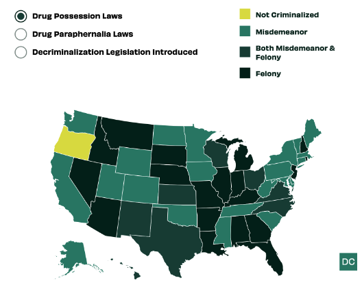
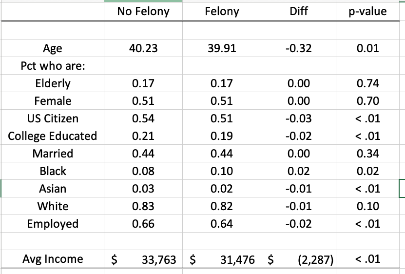
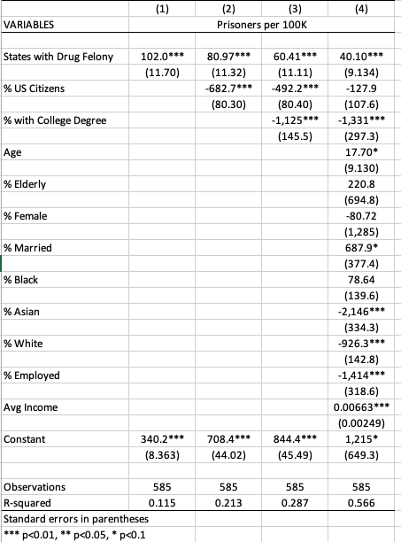

** Set Path **
** Change this to YOUR Lab 11 folder path **
cd "/Users/egong@middlebury.edu/Library/CloudStorage/Dropbox/Middlebury/Course_Archieve/Spring_2026/ECON_0111/2_Assignments/Labs/Lab_11_Multiple_Reg"ECON 111 - Lab 11: Multivariate Linear Regression
Incarceration and Drug Felony Laws
Preliminaries
Before beginning this lab, make sure you’ve:
Created a folder “Lab 11”
Downloaded the necessary data into the folder from the course site
Data Sources
Felony Drug Possession (State-Level Policy or Treatment T)
States will treat drug possession as either a felony or misdemeanor (except for Oregon which has decriminalized possession). The map shows state-level variation in how drug possession is treated.

Source: Drug Policy AllianceIncarceration Rates
The Prison Policy Initiative has compiled state by year data from the Bureau of Justice Statistics to track rates of incarceration (number of prisoners per 100K).
Both of these datasets are already merged so we can go straight to the analysis.
use prison_policy.dta, clearYou can use des and sum to examine the dataset.
Key Variables
Treatment Variable
The variable drug_felony is the treatment variable and takes a value of 1 if a state treats drug possession as a felony offense.
tab drug_felony
drug_felony | Freq. Percent Cum.
------------+-----------------------------------
0 | 299 50.00 50.00
1 | 299 50.00 100.00
------------+-----------------------------------
Total | 598 100.00Outcome Variable
The outcome variable is prison_rate which is the number of prisoners per 100K for each state in a year.
sum prison_rate, detail
Prisoners per 100K
-------------------------------------------------------------
Percentiles Smallest
1% 121 86
5% 170 88
10% 208 97 Obs 585
25% 284 114 Sum of wgt. 585
50% 379 Mean 392.3026
Largest Std. dev. 150.2379
75% 474 849
90% 597 868 Variance 22571.42
95% 674 868 Skewness .5338056
99% 779 873 Kurtosis 3.052338Control Variables
We also have control variables from the 2010 US ACS Census, which you will also use for your research project. We’ll use a macro so that we don’t have to keep typing in all the control variables.
global controls "age elderly female citizen_US college married black asian white employed inctot"
des $controls
sum $controls
Variable Storage Display Value
name type format label Variable label
-------------------------------------------------------------------------------
age float %8.0g Mean Age
elderly float %9.0g % elderly
female float %9.0g % female
citizen_US float %9.0g % US citizens
college float %9.0g % with college degree
married float %9.0g % married
black float %9.0g % Black
asian float %9.0g % Asian
white float %9.0g % White
employed float %9.0g % employed
inctot double %12.0g Mean Income
Variable | Obs Mean Std. dev. Min Max
-------------+---------------------------------------------------------
age | 598 40.06767 1.550594 33.26762 42.95278
elderly | 598 .1653447 .0172202 .1077021 .2078378
female | 598 .5125921 .0074271 .4946863 .5260145
citizen_US | 598 .5242915 .0699041 .4045081 .7173913
college | 598 .1996801 .0395342 .1384429 .3013636
-------------+---------------------------------------------------------
married | 598 .4411798 .0235086 .3956903 .4850779
black | 598 .0876127 .0858524 .0039747 .3549525
asian | 598 .0277444 .0260765 .0037662 .1421366
white | 598 .822729 .0941042 .6162332 .9590973
employed | 598 .6511864 .0295926 .5744731 .7192599
-------------+---------------------------------------------------------
inctot | 598 32619.76 4846.163 25085.09 46471.88Balance Table
We can use the control variables to examine how felony states (treatment) are different compared to non-felony states (control group).
ttest age, by(drug_felony)
return list
matrix balance = r(mu_1) , r(mu_2), r(mu_2)-r(mu_1), r(p)
foreach x of varlist elderly female citizen_US college married black asian white employed inctot{
ttest `x' , by(drug_felony)
matrix balance = balance \ r(mu_1) , r(mu_2), r(mu_2)-r(mu_1), r(p)
}
matrix colnames balance = no_felony felony diff p_val
matrix rownames balance = $controls
matrix list balance
putexcel set balance.xlsx, sheet(table_1) replace
putexcel A1 = matrix(balance), names
Q1: What is different about felony states (treatment) vs. non-felony states (control group)? For the purposes of causal inference, why are we concerned about these differences?
Correlation between Treatment and Controls
An omitted variable/confounder has two properties: 1) it should affect the outcome and 2) it needs to be correlated with the treatment.
correlate drug_felony age elderly female citizen_US college married black asian white employed inctot(obs=598)
| drug_f~y age elderly female citize~S college married
-------------+---------------------------------------------------------------
drug_felony | 1.0000
age | -0.1048 1.0000
elderly | 0.0135 0.8944 1.0000
female | -0.0160 0.2592 0.2506 1.0000
citizen_US | -0.2263 0.6121 0.4098 -0.1154 1.0000
college | -0.2762 0.0324 -0.2047 0.1230 0.3409 1.0000
married | -0.0390 0.2709 0.2749 -0.5700 0.2439 -0.1900 1.0000
black | 0.0966 -0.0953 -0.1023 0.6730 -0.1919 -0.0289 -0.5752
asian | -0.1276 -0.3199 -0.4492 -0.0307 0.0099 0.5177 -0.4457
white | -0.0673 0.2973 0.3047 -0.4854 0.2899 -0.1654 0.7801
employed | -0.2824 0.6714 0.4895 -0.1579 0.6784 0.3296 0.5328
inctot | -0.2362 -0.0708 -0.2773 0.0505 0.2422 0.8936 -0.1880
| black asian white employed inctot
-------------+---------------------------------------------
black | 1.0000
asian | 0.0647 1.0000
white | -0.7867 -0.5067 1.0000
employed | -0.3257 -0.2042 0.4629 1.0000
inctot | 0.0029 0.6102 -0.2221 0.2847 1.0000
The first column presents the correlation coefficient between drug felony laws and the various controls.
Q2: Compare the 1st column of the correlation table to the balance table. What pattern do you observe?
Q4: Why does the coefficient for drug_felony (estimate of Beta) go from approximately 102 to 81 after we control for pct US citizens?
Multivariate Regression (aka “Regression with Controls”)
We are going to run a series of linear regressions. We first do the simple bivariate regression (using just the outcome and treatment variables). We then begin to control for omitted variables/confounders by including them in the regression. Once we control for them, they are no longer “omitted” and the idea is that they will no longer generate the bias to our estimate of beta.
Note: The code below uses
outreg2to export regression results to Excel. If you haven’t installed it yet, runssc install outreg2once.
reg prison_rate drug_felony
outreg2 using reg_results2, replace
reg prison_rate drug_felony citizen_US
outreg2 using reg_results2
reg prison_rate drug_felony citizen_US college
outreg2 using reg_results2
reg prison_rate drug_felony citizen_US college age elderly female married black asian white employed inctot
outreg2 using reg_results2, excel